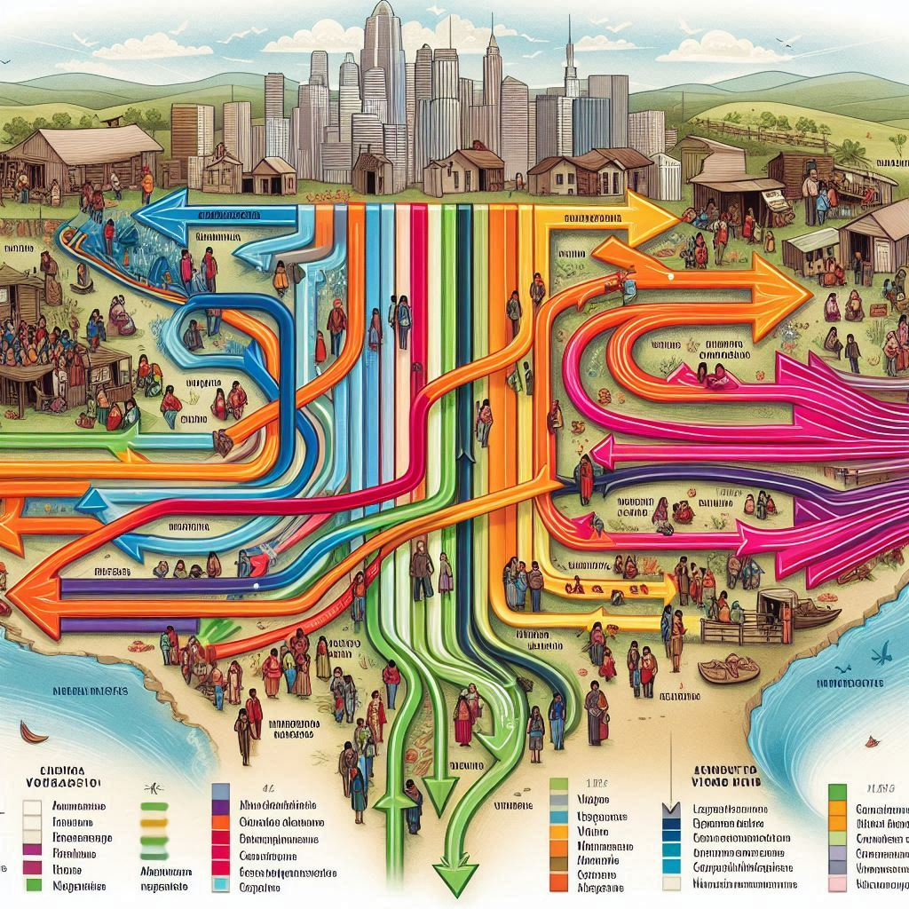

Gráficos Interativos
Explore os dados sobre migração, emprego e educação no Brasil.


Explorando as mudanças e oportunidades na transição do campo para a cidade.
Maria deixou a vida rural em busca de melhores oportunidades na cidade. Hoje, é uma empresária de sucesso, mas mantém fortes laços com suas raízes rurais.
Carlos migrou para a cidade em busca de educação superior. A transição não foi fácil, mas ele se formou em Engenharia Agronômica e retornou ao campo para aplicar seu conhecimento.
Explore os dados sobre migração, emprego e educação no Brasil.
A transição do campo à cidade apresenta desafios e oportunidades. A educação e o acesso à informação são essenciais para garantir que as pessoas possam colher o melhor desses dois mundos.